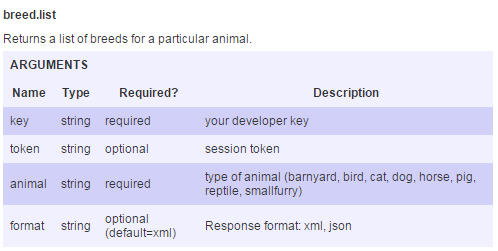

BREED LIST
The first method is breed.list. We first need to
determine the url to supply to the AJAX call. The
method requires a developer API key and a type of
animal:
key: dbd8058845ca77d360619bf5f8a371af
animal: dog
format: json
When using cross domain JSON requests with the
Petfinder API, the URL also needs to include a
callback parameter:
callback=?
The question mark is needed for the jQuery call
and is used to create a unique time-stamped value
for each call.
The full url is now:
api.petfinder.com/breed.list?animal=dog
&key=dbd8058845ca77d360619bf5f8a371af
&format=json&callback=?
We can perform an asynchronous HTTP request using
the jQuery $.ajax() function. It works similarly
to the AJAX call using Javascript, but simplifies
the process greatly and allows for cross domain
requests. The following code is used to access and
display the breed list, and is demonstrated on the
right with an actual call.
$.ajax({
dataType: "jsonp",
url: full url,
success:(function(data){
var breeds = data.petfinder.breeds.breed;
for(var i in breeds)
{
var text = breeds[i].$t;
var output='<li>'+text+'</li>';
$('#list').append(output);
}
})
});
The ajax call returns an object that can be assigned
to a variable and then read by iterating through and
appending each property value to the html document.
The Breed List Method

Example: Click on "Submit" to load a list of dog breeds: